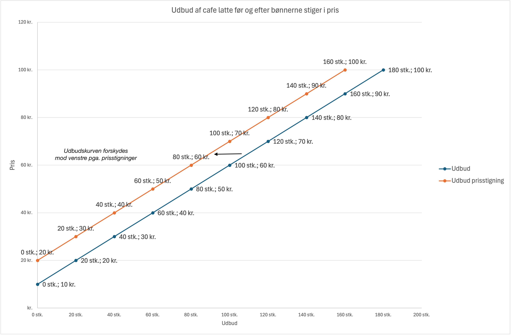
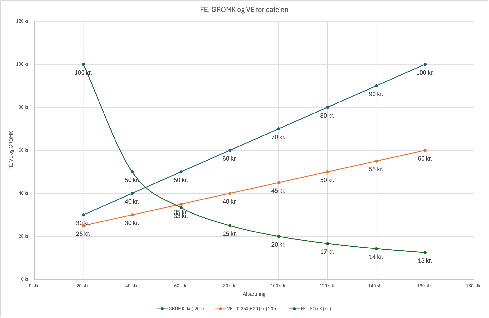
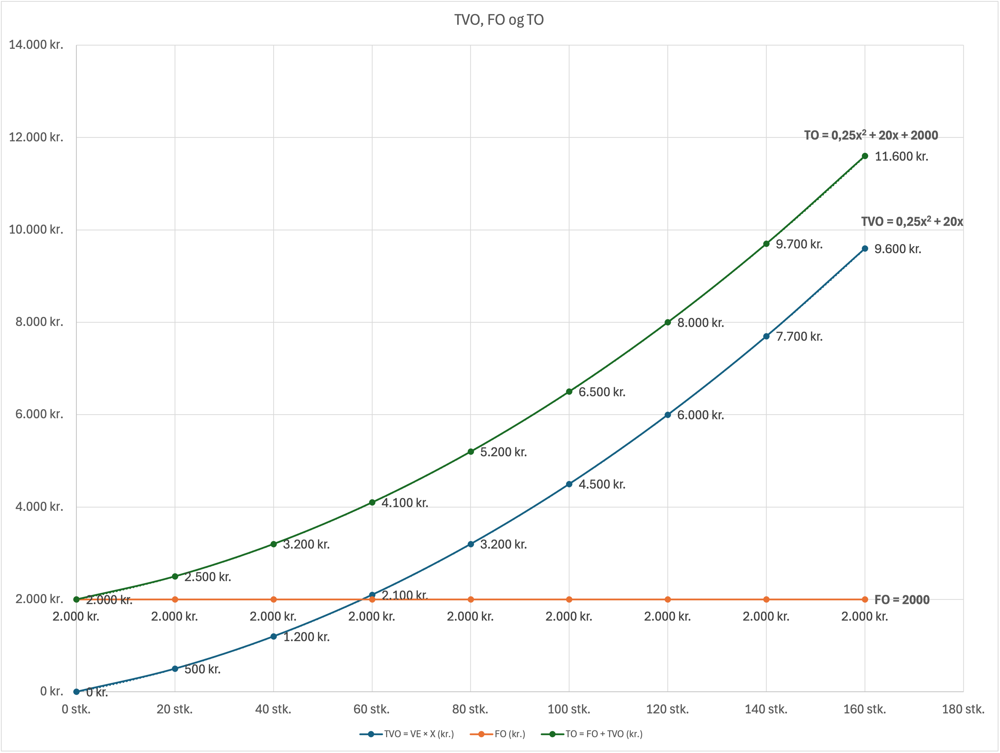
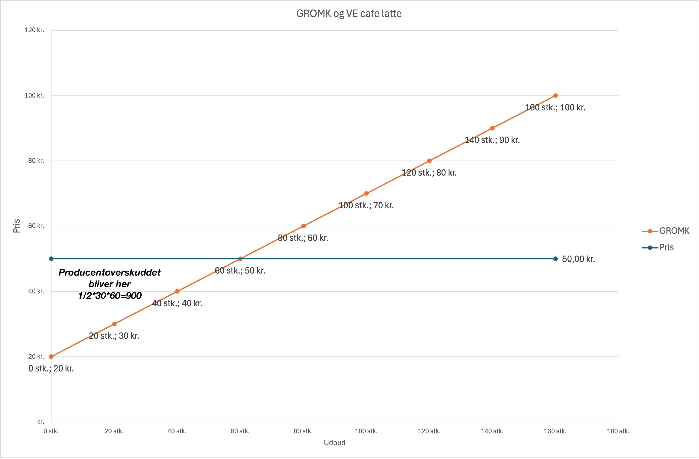
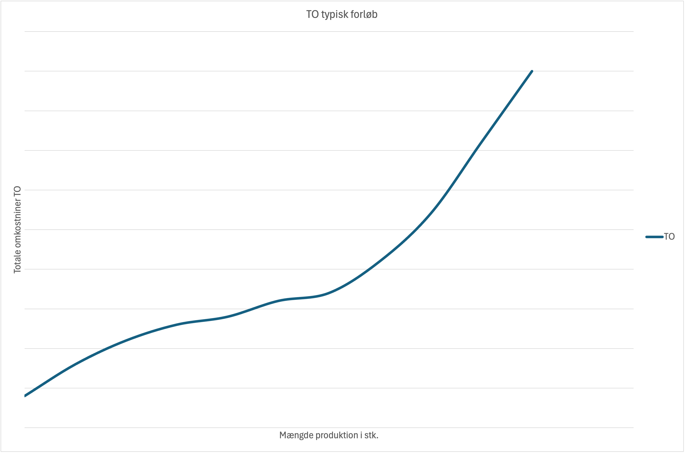
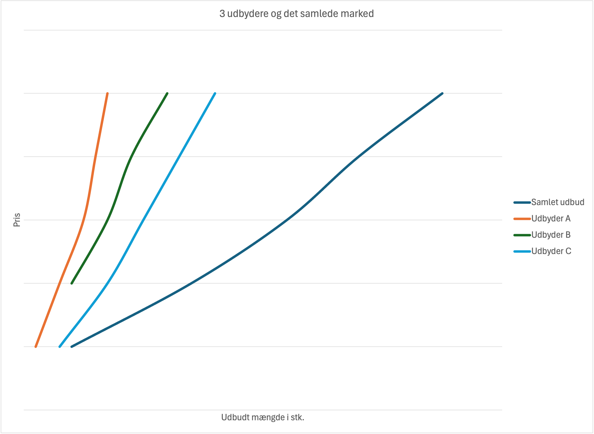

Udbudsteori
Ligesom efterspørgsel er udbud en grundlæggende kraft på markedet. Udbud handler om, hvor meget virksomheder er villige til at producere og sælge ved forskellige priser.
Loven om udbud
Loven om udbud siger, at der er en positiv sammenhæng mellem prisen på en vare og den mængde, der udbydes. Når prisen stiger, stiger udbuddet, og når prisen falder, falder udbuddet - alt andet lige.
Hvorfor gælder loven om udbud?
- Produktionsomkostninger: Højere priser gør det rentabelt at producere mere
- Stigende marginalomkostninger: Det koster mere at producere ekstra enheder
- Produktionskapacitet: Højere priser retfærdiggør brug af dyrere produktionsmetoder, overarbejde etc.
Stigende marginalomkostninger opstår, fordi virksomheder typisk udnytter deres mest effektive ressourcer først. Dette betyder, at de første medarbejdere, de bedst beliggende lokationer eller de mest moderne maskiner vil være de mest produktive og omkostningseffektive. Når produktionen skal øges yderligere, må virksomheden ty til mindre ideelle ressourcer – måske ansætte mindre erfarne medarbejdere, åbne butikker på mindre attraktive steder, eller bruge ældre, mindre effektive maskiner. Hver ekstra enhed bliver derfor dyrere at producere end den foregående. Produktionskapacitet refererer til den maksimale mængde varer eller tjenester en virksomhed kan producere inden for en given tidsramme. Når efterspørgslen stiger, og priserne bliver højere, kan det retfærdiggøre, at virksomheden tager dyrere produktionsmetoder i brug, som f.eks. at betale for overarbejde, køre maskinerne i længere tid, eller endda investere i ny, men dyrere, teknologi for at udvide kapaciteten.
Eksempler på stigende marginalomkostninger og produktionskapacitet
| Virksomhed/Sektor | Stigende Marginalomkostninger | Produktionskapacitet |
|---|---|---|
| Softwareudvikling | De første udviklere er ofte de mest erfarne og effektive. Senere ansættelser kan kræve mere træning eller være mindre produktive, hvilket øger omkostningerne pr. linje kode. | Et softwarefirma kan skalere ved at ansætte flere udviklere, men der er en grænse for, hvor mange der kan arbejde effektivt på samme projekt uden at skabe flaskehalse eller koordinationsproblemer. |
| Restaurationsbranchen | De første kokke og tjenere er de mest erfarne. Ved travlhed ansættes ofte mindre erfarne medarbejdere eller der betales overtid, hvilket øger omkostningerne pr. serveret ret. | En restaurant har et begrænset antal borde og køkkenkapacitet. For at servere flere gæster skal de måske udvide lokalerne eller investere i mere udstyr, hvilket er dyrt. |
| Landbrug | De mest frugtbare jorder og effektive maskiner bruges først. For at øge produktionen må man dyrke mindre frugtbar jord eller bruge ældre udstyr, hvilket øger omkostningerne pr. enhed afgrøde. | En landmand kan kun dyrke et bestemt areal jord. For at øge produktionen markant skal der købes mere jord eller investeres i mere avanceret (og dyrere) teknologi. |
| Finanssektoren (Bank) | De første kunder er ofte de mest profitable og lette at servicere. At tiltrække nye kunder kan kræve dyrere markedsføring, mere komplekse produkter eller mere tidskrævende rådgivning, hvilket øger omkostningerne pr. ny kunde. | En bank har en vis kapacitet til at behandle lån, åbne konti og yde rådgivning. Ved høj efterspørgsel kan de ansætte flere medarbejdere eller investere i IT-systemer, men der er en grænse for, hvor hurtigt og effektivt dette kan gøres. |
| Finanssektoren (Forsikring) | De mest standardiserede forsikringsprodukter er billigst at administrere. At tilbyde specialiserede eller højrisikoforsikringer kræver mere individuel vurdering og højere omkostninger pr. police. | Et forsikringsselskab kan tegne et vist antal policer. For at udvide markant skal de måske ansætte flere skadebehandlere, aktuarkere eller investere i nye risikovurderingssystemer. |
| Finanssektoren (Realkredit) | De mest ligetil boliglån er de billigste at behandle. Mere komplekse lån eller kunder med specielle behov kræver mere sagsbehandling og øger omkostningerne pr. lån. | Et realkreditinstitut har en given kapacitet til at udstede og administrere lån. Ved øget efterspørgsel kan de ansætte flere sagsbehandlere eller automatisere processer, men der er en grænse for, hvor meget volumen de kan håndtere. |
Udbudstabel for cafe latte
| Pris (kr.) | Udbudt mængde (kopper/time) | Ændring i mængde | Ændring i pris |
|---|---|---|---|
| 10 | 0 | - | - |
| 20 | 20 | +20 | +10 (+100%) |
| 30 | 40 | +20 (+100%) | +10 (+50%) |
| 40 | 60 | +20 (+50%) | +10 (+33%) |
| 50 | 80 | +20 (+33%) | +10 (+25%) |
| 60 | 100 | +20 (+25%) | +10 (+20%) |
| 70 | 120 | +20 (+20%) | +10 (+17%) |
| 80 | 140 | +20 (+17%) | +10 (+14%) |
| 90 | 160 | +20 (+14%) | +10 (+13%) |
| 100 | 180 | +20 (+13%) | +10 (+11%) |
Figur: Udbudskurve for cafe latte, ved højere priser udbydes mere. Udbudskurven viser tydeligt den positive sammenhæng: Ved lave priser (10-20 kr.) er der kun udbud fra 0-20 kopper, mens ved højere priser (100 kr.) stiger udbuddet til 180 kopper.
Lineær udbudsfunktion
Vi kan beskrive udbuddet matematisk med en lineær funktion, hvilket er en simplificering i forhold til den virkelige verden hvor udbudskurver vil have mere specielle forløb:
P = 0,5X + 20
Hvor:
- P = Pris (kr.)
- X = Mængde (kopper)
- 0,5 = Stigning pr. ekstra kop
- 20 = Minimumspris for produktion
Beregningseksempler
- Hvor mange kopper udbydes ved 50 kr.?
P = 0,5X + 20
50 = 0,5X + 20
50 - 20 = 0,5X
30 = 0,5X
X = 30 / 0,5 = 60 kopper - Hvad koster det at producere 100 kopper?
P = 0,5×100 + 20 = 50 + 20 = 70 kr.
Faktorer der påvirker udbud
| Faktor | Effekt på udbud | Eksempel |
|---|---|---|
| Teknologi | Øger udbud (forskydning til højre) | Bedre kaffemaskiner → flere kopper pr. time |
| Produktionsomkostninger | Mindsker udbud (forskydning til venstre) | Dyrere kaffebønner → højere priser |
| Antal producenter | Øger udbud (forskydning til højre) | Flere caféer i området → mere udbud |
| Forventninger | Kan påvirke begge veje | Forventning om højere priser → mindre udbud nu |
| Digitalisering | Øger udbud (forskydning til højre) | Online banking → flere kunder pr. rådgiver |
| Regulering | Mindsker udbud (forskydning til venstre) | Strengere kapitalkrav → færre realkreditlån |
| Fintech konkurrence | Øger udbud (forskydning til højre) | Nye udbydere → flere låneprodukter |
| Renteforventninger | Kan påvirke begge veje | Forventning om højere renter → mere udlån nu |
| AI og automatisering | Øger udbud (forskydning til højre) | Robo-advisory → billigere investeringsrådgivning |
Eksempel på forskydning af udbudkurven
Figur: Faktorer der påvirker udbud. kaffebønnerne bliver dyrere, hvilket øger produktionsomkostningerne og mindsker udbuddet (forskydning til venstre fra blå til orange udbudskurve).
Omkostningsbegreber: GROMK, VE, FE, FO, TO, TVO
For at forstå udbudskurven er det essentielt at kende til forskellige omkostningsbegreber:
- GROMK (Grænseomkostninger eller marginal omkostninger): Omkostningen ved at producere én ekstra enhed. GROMK er afgørende for en virksomheds udbudsbeslutninger, da virksomheder kun vil producere en ekstra enhed, hvis prisen de kan sælge den for, mindst dækker GROMK.
- VE (Variable Enhedsomkostninger): De variable omkostninger per produceret enhed. Variable omkostninger ændrer sig med produktionsmængden (f.eks. råvarer, løn til timelønnede).
- FO (Faste Omkostninger): Omkostninger der ikke ændrer sig med produktionsmængden (f.eks. husleje, faste lønninger). I dette eksempel sættes de faste omkostninger til 2000 kr. pr. dag.
- FE (Faste Enhedsomkostninger): De faste omkostninger per produceret enhed, beregnet som FO divideret med antal producerede enheder (FE = FO / X).
- TVO (Totale Variable Omkostninger): De samlede variable omkostninger, beregnet som VE multipliceret med antal producerede enheder (TVO = VE × X).
- TO (Totale Omkostninger): De samlede omkostninger ved produktionen, som er summen af faste omkostninger og totale variable omkostninger (TO = FO + TVO).
GROMK og udbudskurven
GROMK (Grænseomkostninger) er direkte afgørende for, hvordan udbudskurven bliver. En virksomheds udbudskurve er identisk med dens GROMK-kurve over de variable enhedsomkostninger (VE). Dette skyldes, at en rationel virksomhed kun vil udbyde en ekstra enhed, hvis den pris, den kan opnå på markedet, mindst dækker omkostningerne ved at producere netop denne ekstra enhed (GROMK). Hvis markedsprisen er lavere end GROMK, vil virksomheden tabe penge på at producere den pågældende enhed og vil derfor undlade at udbyde den. Omvendt, hvis prisen er højere end GROMK, vil virksomheden øge produktionen for at maksimere sit overskud.
| Omkostningstype | Definition | Eksempel (Generel Virksomhed) | Eksempel (Finansiel Sektor) | Bestemmelse/Beregning |
|---|---|---|---|---|
| GROMK (Grænseomkostninger / Marginalomkostninger) | Omkostningen ved at producere én ekstra enhed. | En bager producerer 100 brød for 2000 DKK, og det koster 15 DKK at producere det 101. brød. GROMK = 15 DKK. | En bank behandler 10.000 lån, og det koster 150 DKK at behandle det 10.001. lån. GROMK = 150 DKK. | Ændring i Totale Omkostninger (ΔTO) / Ændring i Mængde (ΔX) eller ΔVO/ΔX.
Kender man funktionsforskriften for VO eller TO kan man bestemme GROMK mere præcist ved at differentiere VO eller TO.
Dvs.: GROMK = VO' = TO' |
| VE (Variable Enhedsomkostninger) | De variable omkostninger per produceret enhed. | Råvarer til et brød (mel, gær) = 5 DKK. Løn til timelønnet bager per brød = 3 DKK. VE = 5 + 3 = 8 DKK/brød. | Løn til sagsbehandler per lån = 150 DKK. Omkostninger til kreditvurdering per lån = 50 DKK. VE = 150 + 50 = 200 DKK/lån. | Variable Omkostninger (VO) / Antal producerede enheder (X) |
| FO (Faste Omkostninger) | Omkostninger der ikke ændrer sig med produktionsmængden på kort sigt. | Husleje, forsikring, faste lønninger til administration i bageriet. | Husleje for hovedkontor, faste lønninger til direktion, IT-systemer (licenser) i banken. | Summen af alle omkostninger, der er uafhængige af produktionsvolumen. |
| FE (Faste Enhedsomkostninger) | De faste omkostninger per produceret enhed. | Faste omkostninger for bageriet er 10.000 DKK/måned. Ved 4.000 brød/måned er FE = 2,50 DKK/brød. | Faste omkostninger FO for bankfilialen er 100.000 DKK/måned. Ved 1000 lån/måned er FE = 100 DKK/lån. | Faste Omkostninger (FO) / Antal producerede enheder (X) |
| TO (Totale Omkostninger) | Summen af faste og variable omkostninger. | FO (5000 DKK) + VO (100 brød * 5 DKK/brød = 500 DKK) = 5500 DKK. | FO (50.000 DKK) + VO (500 lån * 200 DKK/lån = 100.000 DKK) = 150.000 DKK. | Faste Omkostninger (FO) + Variable Omkostninger (VO) |
| TVO (Totale Variable Omkostninger) | Omkostninger der ændrer sig proportionalt med produktionsmængden. | Omkostninger til mel, gær, vand, energi til ovnen, løn til timelønnet bager. | Løn til sagsbehandlere (per lån), omkostninger til ekstern kreditvurdering, provision til mæglere. | Variable Enhedsomkostninger (VE) * Antal producerede enheder (X) |
Ofte vil virksomheder først opleve at de marginale omkostninger konstante for sidenhen at stige når kapaciteten øges, f.eks. pga. begrænset produktionskapacitet, øgede lønomkostninger ved overarbejde, eller behovet for at anvende mindre effektive produktionsmetoder. I eksemplerne her benyttes ofte simplere lineære GROMK funktioner.
Beregning af omkostninger for cafe latte i tabelformat
| Mængde (X) | GROMK (kr.) | VE = 0,25X + 20 (kr.) | TVO = VE × X (kr.) | FO (kr.) | FE = FO / X (kr.) | TO = FO + TVO (kr.) |
|---|---|---|---|---|---|---|
| 0 stk. | - | - | 0 | 2000 | - | 2000 |
| 20 stk. | 30 | 25 | 500 | 2000 | 100 | 2500 |
| 40 stk. | 40 | 30 | 1200 | 2000 | 50 | 3200 |
| 60 stk. | 50 | 35 | 2100 | 2000 | 33,33 | 4100 |
| 80 stk. | 60 | 40 | 3200 | 2000 | 25 | 5200 |
| 100 stk. | 70 | 45 | 4500 | 2000 | 20 | 6500 |
| 120 stk. | 80 | 50 | 6000 | 2000 | 16,67 | 8000 |
| 140 stk. | 90 | 55 | 7700 | 2000 | 14,29 | 9700 |
| 160 stk. | 100 | 60 | 9600 | 2000 | 12,50 | 11600 |
Eksempel på omkostningsberegning for cafe latte ved funktionsforskrifter
Ovenfor er vist en tabel med forskellige omkostningsbegreber for produktion af cafe latte. Herunder forklares hvordan de forskellige omkostninger beregnes ud fra funktionsforskrifterne.
Kender vi f.eks funktionsforskriften for GROMK altså udbudskurven og faste omkostninger FO, kan de øvrige omkostninger beregnes baseret på GROMK og FO.
GROMK = 0,5X + 20
Er de faste omkostninger som i tabellen 2000 kr. konstant får vi FO = 2.000
Nu kan vi enten finde TVO ved at integrere GROMK eller nemmere da GROMK her er lineær bestemme VE som er GROMK med den halve hældning
VE = 0,5*0,5X + 20 = 0,25X + 20
Nu kan vi finde TVO ud fra VE, da:
TVO = VE*X = (0,25X + 20)X = 0,25X^2 + 20X
Nu kan vi finde TO = TVO + FO = 0,25X^2 + 20X + 2000
FE = FO / X = 2000 / X

Figur: VE, FE og GROMK kurver for cafe latte. GROMK-kurven (blå) viser de stigende marginalomkostninger ved produktion af flere kopper, mens VE-kurven (rød) viser de variable enhedsomkostninger, som også stiger med mængden. FE-kurven (grøn) falder, da de faste omkostninger fordeles over flere enheder.

Figur: TVO, FO og TO kurver for cafe latte. TVO-kurven (blå) viser de variable omkostninger, FO kurven (orange) viser de faste omkostninger, TO-kurven (grøn) viser de samlede omkostninger.
Producentoverskud
Ligesom forbrugere opnår overskud, gør producenter det også. Producentoverskud er den økonomiske gevinst, som producenter opnår, når de sælger til en pris der er højere end deres mindste-pris for at producere varen.
Beregning af producentoverskud
Producentoverskuddet beregnes som forskellen mellem den faktiske markedspris og producentens minimumspris:
Beregning:
Producentoverskud = Markedspris - Minimumspris
For en enkelt producent: PO = P - MP
For hele markedet: PO = ½ × (Markedspris - Minimumspris) × Mængde
Lineær funktion for producentoverskud
Producentoverskuddet kan illustreres med en lineær funktion, hvor vi ser på sammenhængen mellem mængde og overskud:
PO = ½ × (P - MP) × X
Hvor:
- PO = Producentoverskud
- P = Markedspris
- MP = Minimumspris
- X = Mængde
Eksempel: Cafe latte marked
Vi så tidligere på cafe latte hvor GROMK = udbudskurven = 0,5X + 20.
Hvis markedsprisen er 50,- kr. kan vi bestemme den afsatte mængde og derefter bestemme producentoverskuddet:
Vi sætter GROMK = P dvs.:
50 = 0,5X + 20
50 - 20 = 0,5X
30 = 0,5X
X = 30 / 0,5 = 60 kopper
Nu kan vi bestemme producentoverskuddet:
PO = ½ × (P - MP) × X
PO = ½ × (50 - 20) × 60
PO = ½ × 30 × 60 = 900 kr.
Producentoverskuddet ved en markedspris på 50 kr. og en afsat mængde på 60 kopper er altså 900 kr.

Figur: Producentoverskud for cafe latte. Området mellem markedsprisen (50 kr.) og Gromk-kurven udgør producentoverskuddet på 900 kr.
Producentoverskud i praksis
- Effektiv produktion: Hvis din minimumspris for at lave en kop kaffe er 25 kr., men markedsprisen er 60 kr., er dit producentoverskud 35 kr. pr. kop.
- Teknologi: Hvis du investerer i en bedre kaffemaskine der sænker din minimumspris fra 30 kr. til 20 kr., stiger dit producentoverskud med 10 kr. pr. kop.
- Stordrift: Store café-kæder har ofte lavere minimumspriser end små caféer, hvilket giver dem højere producentoverskud.
- Konkurrence: Flere caféer i området presser priserne ned og reducerer producentoverskuddet for alle.
- Bank: Hvis en banks fundingomkostninger er 2%, men udlånsrenten er 5%, er producentoverskuddet 3% af udlånsbeløbet.
- Forsikring: Hvis et forsikringsselskabs skadesudgifter er 60% af præmierne, men markedsprisen tillader 70% dækning, er overskuddet 10%.
- Realkredit: Hvis realkreditinstituttets funding er 1,5%, men obligationsrenten er 2,5%, er producentoverskuddet 1% af obligationsbeløbet.
- Revision: Hvis en revisors timepris er 800 kr., men markedsprisen er 1.200 kr., er producentoverskuddet 400 kr. pr. time.
- Pension: Hvis et pensionsselskabs administrationsomkostninger er 0,3% af formuen, men ÅOP er 0,8%, er producentoverskuddet 0,5%.
Faktorer der påvirker producentoverskud
| Faktor | Effekt på producentoverskud | Eksempel |
|---|---|---|
| Højere priser | Øger producentoverskud | Morgenmyldretid giver højere priser |
| Lavere omkostninger | Øger producentoverskud | Bulk-indkøb af kaffebønner |
| Teknologi | Øger producentoverskud | Automatiske kaffemaskiner |
| Mere konkurrence | Reducerer producentoverskud | Ny café åbner i nærheden |
Omkostninger på kort og langt sigt
I dette kapitel har vi fokuseret på omkostningsbegreber og omkostningskurver på kort sigt. På kort sigt er der både faste og variable omkostninger, hvilket påvirker virksomhedens udbudsbeslutninger.
På langt sigt vil alle omkostninger være variable. Dette skyldes, at virksomheder over tid kan justere alle deres produktionsfaktorer, herunder størrelsen af deres anlæg, antallet af maskiner og selv faste kontrakter som husleje kan genforhandles eller opsiges. Der er altså ingen faste omkostninger på lang sigt, da alt kan ændres.
Virksomheder med underskud på kort sigt
Det er ikke ualmindeligt, at virksomheder opererer med underskud på kort sigt, især når de træder ind på nye markeder eller investerer kraftigt i vækst. Dette kan skyldes høje opstartsomkostninger, aggressiv prissætning for at vinde markedsandele, eller en periode med lav efterspørgsel. Så længe virksomhedens indtægter dækker de variable omkostninger, kan det give mening at fortsætte produktionen på kort sigt for at minimere tabene, da de faste omkostninger alligevel skal betales.
| Virksomhed/Sektor | Situation med underskud på kort sigt | Begrundelse |
|---|---|---|
| Facebook (tidlige år) | Opererede med betydelige underskud i de første år. | Fokuserede på brugerakkvisition og vækst frem for profit. Store investeringer i infrastruktur og udvikling uden tilsvarende reklameindtægter i starten. |
| AI Startups | Mange AI-virksomheder har store R&D-omkostninger og opererer med underskud i opstartsfasen. | Høje omkostninger til forskning, udvikling af komplekse algoritmer, dataindsamling og træning af modeller. Indtægterne kommer først, når produkter er modne og skalerbare. |
| Streaming Services (f.eks. Netflix) | Investerer massivt i indholdsproduktion og markedsføring, hvilket ofte resulterer i underskud i perioder. | Behov for at opbygge et stort indholdsbibliotek for at tiltrække og fastholde abonnenter. Konkurrence presser priserne og øger udgifterne til eksklusivt indhold. |
| Biotech Virksomheder | Bruger milliarder på forskning og kliniske forsøg i årevis, før et produkt godkendes og genererer indtægter. | Lang og omkostningstung udviklingsproces for nye lægemidler. Høj risiko for, at projekter mislykkes, før de når markedet. |
Udbudsforhold på kort og lang sigt
Forskellen mellem kort og lang sigt er afgørende for udbudsforholdene. På kort sigt er mindst én produktionsfaktor (typisk kapital - faste aktiver som maskiner, bygninger, husleje) fast, hvilket betyder, at virksomheder kun kan justere deres produktion ved at ændre på variable faktorer som arbejdskraft og råvarer. Dette fører til, at udbudskurven på kort sigt er relativt uelastisk, da virksomhederne har begrænsede muligheder for at reagere på prisændringer.
På lang sigt er alle produktionsfaktorer variable. Virksomheder kan udvide eller mindske deres produktionskapacitet, træde ind på eller forlade markedet. Dette gør udbudskurven på lang sigt mere elastisk, da virksomhederne har fuld fleksibilitet til at tilpasse sig ændringer i markedsforholdene. For eksempel, hvis prisen på en vare stiger markant, kan nye virksomheder etablere sig på markedet, og eksisterende virksomheder kan udvide deres produktionsanlæg, hvilket fører til en større stigning i den udbudte mængde end på kort sigt.
Figuren "VE for 3 forskellig fabrikker, samt VE på langt sigt" illustrerer dette princip. De tre U-formede kurver repræsenterer de variable enhedsomkostninger (VE) for tre forskellige
fabrikker: en lille, en mellem og en stor fabrik. Hver af disse kurver viser de kortsigtede omkostninger for en given produktionskapacitet.
Den lyseblå kurve, "VE langt sigt", er en kurven, der tangerer de laveste punkter på de kortsigtede VE-kurver.
Denne langsigtede VE-kurve viser de lavest mulige variable enhedsomkostninger, en virksomhed kan opnå, når den har fuld fleksibilitet til at vælge den optimale fabriksstørrelse for ethvert produktionsniveau.
Dette afspejler fænomenet stordriftsfordele, hvor større produktionsanlæg (som den mellem fabrik) kan opnå lavere gennemsnitlige omkostninger per enhed ved højere produktionsmængder.
Bemærk, dog at figuren illustrerer at stordriftsfordele ikke fortsætter uendeligt. På et tidspunkt kan vil yderligere vækst fører til øgede gennemsnitlige omkostninger på grund af faktorer som begrænsede ressourcer, ledelseskompleksitet og ineffektivitet.
Figur: VE for 3 forskellige fabrikker, samt VE på langt sigt. De tre U-formede kurver viser de kortsigtede variable enhedsomkostninger for en lille, mellem og stor fabrik. Den lyseblå kurve er den langsigtede variable enhedsomkostningskurve, som viser de laveste punkter på de kortsigtede kurver og illustrerer stordriftsfordele.
Eksempler på stordriftsfordele
| Virksomhed/Sektor | Eksempel på stordriftsfordele | Effekt på produktionspriser |
|---|---|---|
| Tesla | Gigafabrikker muliggør massiv produktion af elbiler og batterier. | Lavere produktionsomkostninger per bil og batteripakke gennem automatisering og volumenindkøb. |
| Amazon | Store distributionscentre og avanceret logistiknetværk. | Reduceret omkostning per leveret vare og hurtigere leveringstider. |
| Intel/AMD | Investering i avancerede mikrochip-fabrikker (fabs). | Lavere omkostninger per chip, da faste omkostninger fordeles over millioner af enheder. |
| Mærsk | Store containerskibe og globalt netværk. | Lavere omkostninger per fragtet container gennem effektiv ruteplanlægning og brændstoføkonomi. |
| Softwarevirksomheder (f.eks. Microsoft) | Udvikling af software, der kan distribueres til millioner af brugere. | Næsten nul marginalomkostninger for hver ekstra kopi af softwaren efter den første udvikling. |
Mere realistiske omkostningskurver
I de tidligere eksempler har vi ofte benyttet simplificerede, lineære omkostningsfunktioner for at illustrere grundlæggende principper. I virkeligheden er omkostningskurver dog sjældent lineære og følger ofte et mere komplekst forløb, der afspejler forskellige produktionsforhold og effektivitetsniveauer.
Figuren "GROMK, VE, FE viser et mere realistisk billede af omkostningskurverne. Her ses det, at:
- GROMK (Grænseomkostninger): Starter lavt, falder derefter og stiger så kraftigt. Dette skyldes, at de første enheder er relativt billige at producere, men efterhånden som produktionskapaciteten udnyttes, stiger omkostningerne for hver ekstra enhed.
- VE (Variable Enhedsomkostninger): Følger en lignende U-formet kurve som GROMK, men er typisk lavere og skæres af GROMK-kurven i dens minimum.
- FE (Faste Enhedsomkostninger): Falder kontinuerligt, da de faste omkostninger fordeles over et stigende antal producerede enheder.

Figur: GROMK, VE og FE kurver. Denne figur viser et mere realistisk forløb af omkostningskurverne, hvor GROMK og VE er U-formede, FE falder.
Typisk vil de totale omkostninger have et avanceret forløb, der kan være brud på kurven, og den kan være ujævn herunder er et eksempel på en TO kurve. Vi kan se at omkostningerne stiger voldsomt efter et vist produktionsniveau, hvor yderligere produktion medfører
Figur: TO totale omkostninger et mere realistisk forløb
Markedets udbudskurve
Markedets samlede udbudskurve er summen af alle individuelle producenters udbudskurver. Dette betyder, at for enhver given pris, lægges den mængde, som hver enkelt producent er villig til at udbyde, sammen for at finde den totale mængde, der udbydes på markedet.
Figuren herunder viser et simpelt eksempel med 3 udbydere og det samlede marked illustrerer dette princip med tre forskellige producenter: Udbyder A, Udbyder B og Udbyder C.
- Udbyder A (orange kurve): Denne producent har den stejleste udbudskurve, hvilket indikerer, at de kun er villige til at udbyde en relativt lille mængde, selv ved højere priser. De har sandsynligvis højere produktionsomkostninger eller en mindre produktionskapacitet sammenlignet med de andre.
- Udbyder B (grøn kurve): Udbyder B's kurve er mindre stejl end A's, de udbyder mere end Udbyder A.
- Udbyder C (lyseblå kurve): Udbyder C har den fladeste udbudskurve blandt de individuelle producenter og starter med at udbyde mere end A og B, og forøger udbuddet forholdsmæssigt mere ved højere priser. Dette indikerer, at Udbyder C er den største producent med den højeste produktionskapacitet og/eller de laveste marginalomkostninger, hvilket gør dem i stand til at udbyde en betydelig mængde selv ved lavere priser.
Den mørkeblå kurve, "Samlet udbud", repræsenterer markedets totale udbud. Den fremkommer ved horisontalt at summere mængden fra Udbyder A, B og C ved hver enkelt pris. Ved lave priser er det måske kun Udbyder C, der udbyder, men efterhånden som prisen stiger, kommer Udbyder B og derefter Udbyder A også ind på markedet, hvilket får den samlede udbudskurve til at blive fladere og forskydes mod højre.
Figur: 3 udbydere og det samlede marked. Den samlede udbudskurve er summen af de individuelle udbudskurver fra Udbyder A, B og C.